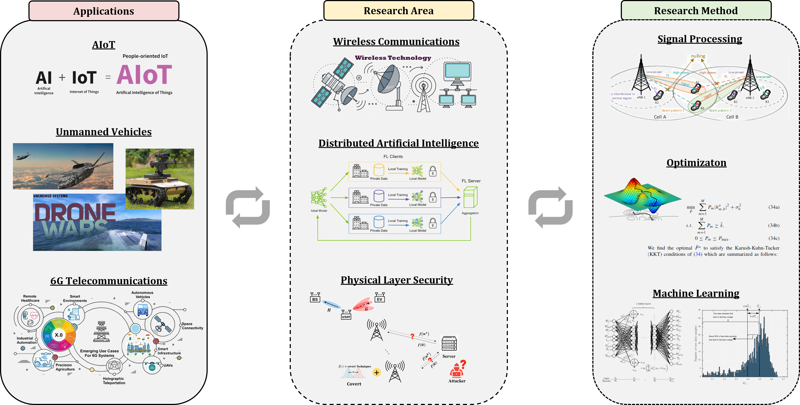

Research

Current research topics are:
- Secure Distributed Artificial Intelligence Network for AIoT
- Secure Communications for Unmanned Vehicles
- Hybrid Optimization (Machine Learning + Communication Signal Processing)
Topic Title
Topic description will appear here...